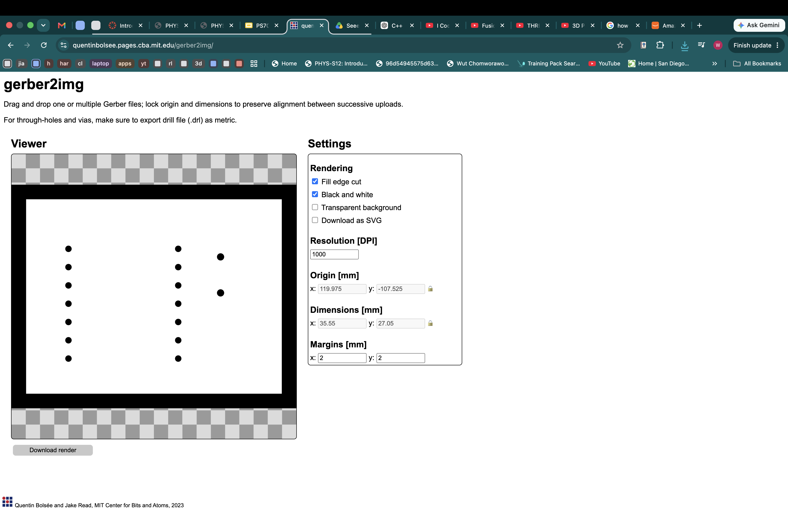
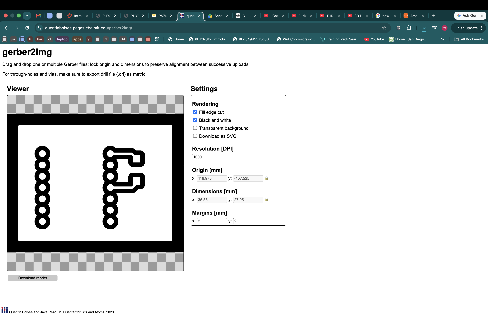
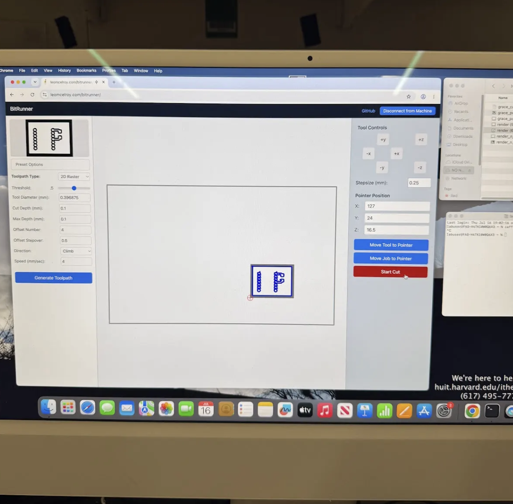
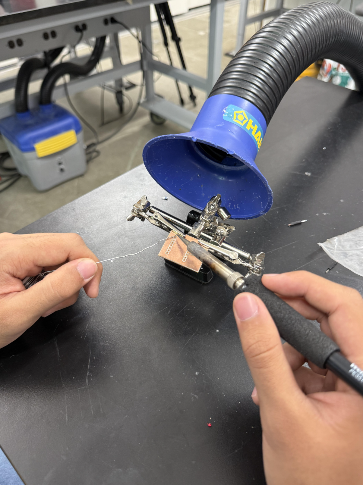
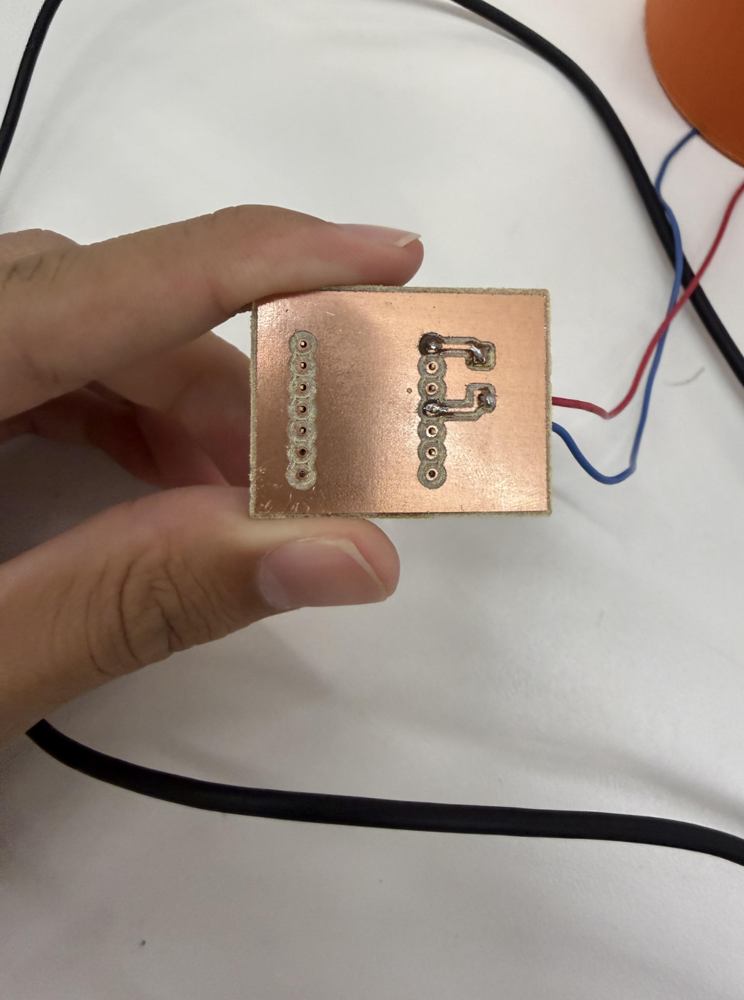

Week 8: CNC
Custom PCB
Design and fabricate something using one of the CNC machines in the lab. Make sure to include some kind of post processing in your design.
As this week's assignment included to both fabricate something using CNC machines and also create an MVP (Most Viable Product) I decided to kill two birds with one stone creating a custom PCB that filled my CNC assignment and is also useful for my MVP. I attended Victor's optional lab section where he taught us how to design and mill PCBs which is how I learned to do both. I will be using KI-Cad to design my PCB.
PCB schematic

The schematic for pcb is very simple, I just have to find two connection points to my microcontroller than can be used to read the capacitance from a water bottle.
PCB design

Link to slides: https://docs.google.com/presentation/d/1nJxkHjFghOLMLG9y3Jg8hHeLzAsGRRuC-UVfzDiuMeY/edit?slide=id.g3976f340c46_0_1#slide=id.g3976f340c46_0_1
Using Ki-Cad I was able to render the schematic into an actual PCB, I followed the guide Victor gave us to create the PCB, I posted the link to the slides above. After finishing the PCB design you want to generate drill files which will give you NPTH, PTH, Fcu, and edgecuts files.
PCB Render


After generating the drill files and locating the files you want gerber2img website and drag in the NPTH, PTH, and edgecut files together, this should result in an image similar to the picture on the left, you then want to click black&white and lock the origin and dimensions. You can now download the first render, after this you can drag in the Fcu or FrontCopper file resulting in an image similar to the one on the right, you also want to download the render.
PCB Print

I moved to printing the PCB by following this tutorial video: https://nathanmelenbrink.github.io/lab/cnc/pcb-cnc-tutorial.html I uploaded the frontcopper files first and calibrated the machine using the 30 degrees V-bit and generated the toolpath using CircuitTraces preset then milled the first layer.
I followed the same tutorial to then upload the edgecuts file, I then switched the drill bit to the 1/32'' endmill and used the circuit outline preset to generate the toolpath and then milled the second layer.
Post Processing


I still had to post process the PCB as I still had to solder on the socket headers to attatch my microcontroller onto the PCB, I also had to solder on the wires that would connect to the copper tape I will use to read the capacitance on my waterbottle. The post processing step was done by my parter Otavio.